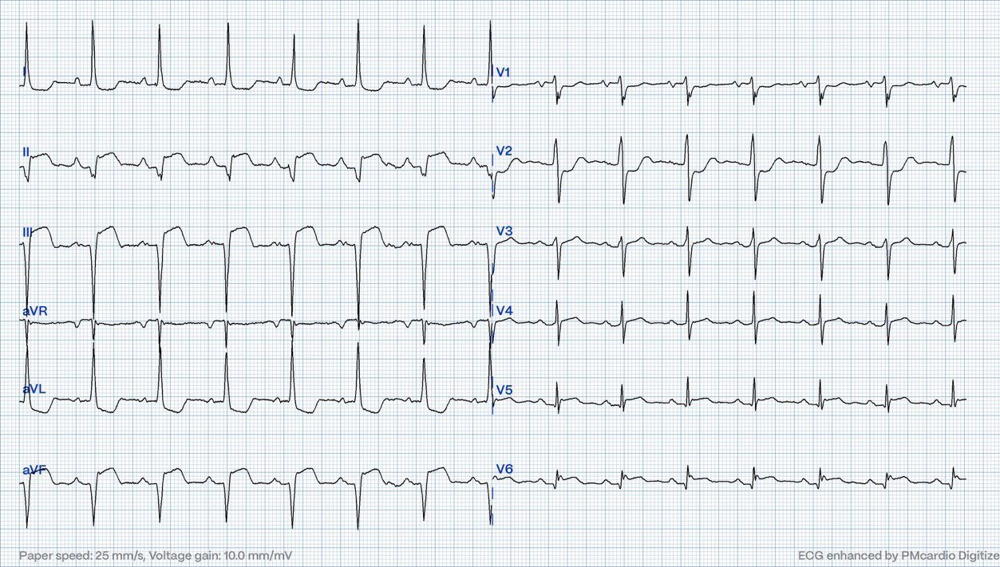
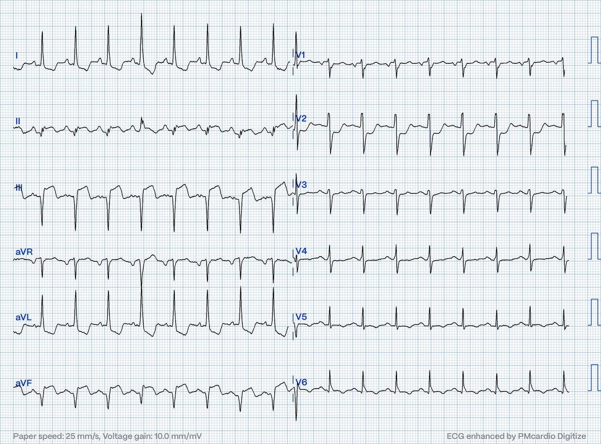
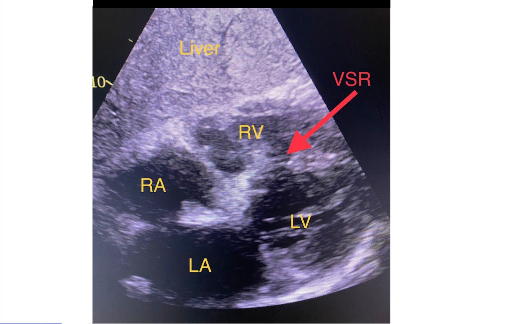

05/09/2024 — Vì sao đột ngột sốc sau vài ngày mệt mỏi, khó chịu?
Bản dịch tiếng Việt của bài "Why the sudden shock after a few days of malaise?" – Dr. Smith’s ECG Blog. Giữ nguyên toàn bộ 3 hình ảnh và 3 video của bản gốc.
Tác giả: Magnus Nossen — Biên tập: Grauer và Smith
Bệnh nhân trong ca hôm nay là một phụ nữ ở độ tuổi 70, tiền sử tăng huyết áp (HTN) và tăng lipid máu. Bà đến một bệnh viện tuyến ngoài sau vài ngày mệt mỏi, khó chịu trong người (malaise). Lúc nhập viện, các dấu hiệu sinh tồn bình thường. Tần số tim khoảng 80 lần/phút. Troponin T lúc đến viện tăng rất cao, 12,335 ng/L. (Đây là giá trị điển hình của một nhồi máu cơ tim bán cấp diện rộng, giá trị bình thường < 0-14ng/L.)
Dưới đây là điện tâm đồ lúc đến viện.


Ban đầu bệnh nhân phủ nhận đau ngực, nhưng khi được hỏi trực tiếp — bà có thừa nhận cảm giác “khó chịu ở ngực” mơ hồ trong những ngày trước đó. Bà được chuyển đến cơ sở của chúng tôi để chụp mạch vành. Khi đến, bà không có biểu hiện suy kiệt (distress). Do suy thận cấp và triệu chứng đã kéo dài nhiều ngày — quyết định chụp mạch vành vào ngày hôm sau.
- Các giá trị Troponin T liên tiếp đang giảm dần, phù hợp với nhồi máu cơ tim bán cấp đã hoàn tất (subacute completed MI).
- Điện tâm đồ lúc nhập viện cho thấy nhịp xoang với tần số tim khoảng 80 lần/phút — và phù hợp với nhồi máu xuyên thành thành dưới, thành bên và thành sau đã hoàn tất ở giai đoạn bán cấp, với sóng Q và ST chênh lên ở các chuyển đạo dưới-bên — và ST chênh xuống ở chuyển đạo V2.
- Bệnh nhân được theo dõi từ xa (telemetry) trong khi chờ chụp mạch vành vào ngày hôm sau.
Bệnh nhân đột ngột thức giấc trong đêm — nói rằng bà cảm thấy “lạ”. Điện tâm đồ dưới đây được ghi vào lúc này. Bạn nghĩ gì?


Điện tâm đồ này phù hợp với nhồi máu dưới-sau-bên — với ST chênh lên kéo dài ở các chuyển đạo dưới và ST chênh xuống soi gương (reciprocal) ở các chuyển đạo bên cao — ST chênh xuống ở chuyển đạo V2 — và sóng T đảo ngược một phần ở đoạn cuối tại các chuyển đạo dưới và các chuyển đạo trước tim bên. Bản ghi này không khác biệt đáng kể so với điện tâm đồ lúc nhập viện.
- Có lẽ thay đổi đáng chú ý nhất — là tần số tim tăng lên, điện tâm đồ này hiện cho thấy nhịp nhanh xoang 118 lần/phút!
- Cũng đáng lưu ý là sóng T vẫn còn dương (không đảo ngược). ST chênh lên kéo dài kèm sóng T dương >48 giờ sau nhồi máu cơ tim có liên quan đến viêm màng ngoài tim khu trú sau nhồi máu (PIRP).
Nhịp nhanh xoang có rất nhiều nguyên nhân tiềm ẩn. Theo kinh nghiệm của tôi, ở bệnh nhân đang nghỉ ngơi và không lo âu — nó thường báo hiệu một bệnh lý nặng. Điều này đặc biệt đúng với bệnh nhân cao tuổi bị nhịp nhanh xoang. Bệnh nhân trong ca hôm nay đột ngột nhịp nhanh trong khi đang ngủ. Tần số tim tăng gần gấp đôi trong vòng một phút. Điều gì có thể giải thích sự thay đổi tần số đột ngột ở bệnh nhân này? Hãy thử xem bạn có nhận ra vấn đề trên mặt cắt cạnh ức của tim dưới đây không.
LƯU Ý: Đoạn video trên được ghi từ «cửa sổ» dưới sườn và cho thấy tim với đủ 4 buồng. Nhĩ phải, thất phải, nhĩ trái và thất trái được quan sát qua gan. Nguyên nhân của nhịp nhanh đột ngột là gì?
= = =
Dưới đây là một ảnh tĩnh trích từ đoạn video trên. Các buồng tim đã được chú thích. Từ “cửa sổ” dưới sườn, tim được quan sát qua gan, do đó nhu mô gan nằm gần đầu dò nhất (phía trên của hình).
- Bên dưới gan là tim với nhĩ phải (RA), thất phải (RV), nhĩ trái (LA) và thất trái (LV)
- Mũi tên đỏ chỉ vào một lỗ thông lớn ở vùng đáy của vách liên thất. Đây là thủng vách liên thất (VSR).
- Như đã đề cập, bệnh nhân này có thể bị viêm màng ngoài tim khu trú sau nhồi máu do một nhồi máu cơ tim diện rộng đã hoàn tất. PIRP liên quan chặt chẽ với vỡ cơ tim.
- Bệnh nhân này đã bị thủng phần đáy của vách liên thất (VSR). Chính VSR là nguyên nhân gây sốc tim!


= = =
Bình luận ngắn về PIRP và sóng T:
Oliva và cs. nhận thấy vỡ cơ tim liên quan chặt chẽ với viêm màng ngoài tim khu trú sau nhồi máu. PIRP liên quan với sóng T dương kéo dài. Ông mô tả hai kiểu tiến triển sóng T không điển hình trong PRIP:
- 1) Sóng T dương (hướng lên) kéo dài quá 48 giờ ở bệnh nhân nhồi máu cơ tim cấp.
- 2) Sóng T chuyển sớm từ đảo ngược sang giả bình thường (trong vòng 48-72 giờ).
Trong ca của chúng tôi, PIRP là lời giải thích có khả năng cho tình trạng sóng T tiếp tục dương. Vì không có các điện tâm đồ liên tiếp — có thể là một trong 2 kiểu trên (chỉ các điện tâm đồ liên tiếp mới phân biệt được).
Một nguyên nhân khác có thể gây giả bình thường hóa sóng T, đã được nhắc đến nhiều lần trên blog này, là giả bình thường hóa do tắc lại một động mạch vành liên quan vùng nhồi máu đã được tái tưới máu. Điều này không phù hợp với bệnh cảnh lâm sàng của ca hôm nay.
Dưới đây là 2 đoạn video nữa. Các hình ảnh này được ghi từ mặt cắt trục ngắn cạnh ức, cắt ngang qua thất trái và thất phải. VSR nằm ở phần dưới và phần đáy của vách liên thất và nhìn thấy rõ. Đoạn video thứ hai dưới đây cho thấy luồng thông (shunt) trên Doppler màu.
= = =
= = =
Bàn luận:
Bệnh nhân trong ca hôm nay gặp biến chứng cơ học thứ phát sau OMI đã hoàn tất. Troponin lúc đến viện tăng rất cao và sóng T vẫn còn dương. Bà có triệu chứng không điển hình khiến bà trì hoãn việc đi khám.
- Biến chứng cơ học thứ phát sau nhồi máu cơ tim không thường gặp vì đa số bệnh nhân được tái thông mạch máu khá nhanh. Bệnh nhân trong ca hôm nay bị thủng vách liên thất (VSR) lớn ở vùng đáy vách như một biến chứng của OMI không được điều trị.
- Việc nghe thấy một tiếng thổi toàn tâm thu thô ráp MỚI xuất hiện đã dẫn đến đánh giá nhanh bằng siêu âm tim, xác nhận nghi ngờ lâm sàng.
VSR sẽ gây luồng thông trái sang phải đột ngột và nếu đủ lớn có thể dẫn đến suy tim trái cung lượng thấp. Thất phải đóng vai trò như một ống dẫn và không nhất thiết bị giãn cấp. Giảm hậu tải thất trái
là thiết yếu để giảm chênh áp qua vách và nhờ đó giảm thể tích luồng thông — làm cho một tỷ lệ lớn hơn dòng máu từ thất trái đi qua van động mạch chủ.
Với bệnh nhân trong ca hôm nay, truyền nitroprusside (thuốc giãn mạch) được bắt đầu để làm giảm sức cản mạch máu hệ thống (SVR), và đặt bóng đối xung động mạch chủ (IABP) để giảm thêm hậu tải, nhờ đó cải thiện huyết động. Cuối cùng VSR được phẫu thuật vá. Bệnh nhân cần lọc máu ngắn hạn sau phẫu thuật, nhưng cuối cùng đã hồi phục hoàn toàn.
Biến chứng cơ học là những di chứng đáng sợ của nhồi máu cơ tim. Chúng thường biểu hiện dưới dạng vỡ thành tự do, thủng vách liên thất hoặc đứt cơ nhú. Tỷ lệ mắc thực sự của 3 biến chứng cơ học này có thể khác với tỷ lệ được báo cáo do báo cáo thiếu, mã hóa sai, hoặc khác biệt giữa các quần thể nghiên cứu. Ước tính gộp lại, chúng xảy ra với tỷ lệ khoảng 3 trên 1000 bệnh nhân nhồi máu cơ tim cấp, phần lớn các biến cố này xảy ra ở bệnh nhân STEMI. Trong số bệnh nhân STEMI, thủng vách liên thất thường gặp nhất và vỡ thành tự do ít gặp nhất.
Biến chứng cơ học xảy ra đột ngột và làm thay đổi huyết động đáng kể — dẫn đến các cơ chế bù trừ thường bao gồm co mạch và nhịp nhanh, cả hai đều là dấu hiệu đặc trưng của sốc tim.
VSR dễ xảy ra hơn ở bệnh nhân lớn tuổi, nữ giới, tăng huyết áp, có bệnh thận mạn và không có tiền sử hút thuốc. Nó thường xảy ra trong bối cảnh nhồi máu cơ tim (MI) lần đầu trên nền điều trị tái tưới máu bị chậm trễ hoặc không được thực hiện. Chụp mạch vành thường cho thấy không có tuần hoàn bàng hệ đến vùng nhồi máu.
Vì thiếu máu cục bộ trước đó tạo ra tiền thích nghi cơ tim (myocardial preconditioning) (làm giảm khả năng hoại tử cơ tim xuyên thành và vỡ cơ tim) — bệnh nhân có bằng chứng đái tháo đường, đau thắt ngực mạn tính hoặc nhồi máu cơ tim trước đó ít có khả năng bị vỡ hơn. VSR có thể xuất hiện trong vòng 1-14 ngày sau nhồi máu cơ tim, tuy nhiên tỷ lệ mắc thường có hai đỉnh (hoặc trong vòng 24 giờ — hoặc sau 3-5 ngày sau nhồi máu cơ tim).
Bệnh nhân thủng vách liên thất chỉ có thể sống sót sau khi được phẫu thuật vá. Do đó, chẩn đoán thủng vách liên thất cần thúc đẩy một buổi thảo luận nhóm tim (heart team) về các lựa chọn. Thảo luận này cần tính đến việc, với một số bệnh nhân, phẫu thuật là vô ích vì tỷ lệ tử vong gần 100%. Bệnh nhân lớn tuổi và những người có chức năng thất phải kém thường thuộc nhóm này. Thời điểm vá thủng vách liên thất còn gây tranh cãi.
- LƯU Ý: Một ca VSR khác — Xem bài ngày 18 tháng Bảy năm 2014.
= = =
Những điểm cần học:
- Nhịp nhanh xoang (đặc biệt ở người cao tuổi) thường báo hiệu bệnh lý nghiêm trọng, như trong ca hôm nay.
- Biến chứng cơ học của nhồi máu xuyên thành hiếm gặp và là những di chứng đáng sợ, mang tỷ lệ bệnh tật và tử vong cao.
- Viêm màng ngoài tim khu trú sau nhồi máu (PIRP) có thể được nghi ngờ từ điện tâm đồ, và liên quan đến tăng nguy cơ vỡ cơ tim.
= = =
Tài liệu tham khảo:
- Oliva PB, Hammill SC, Edwards WD. Electrocardiographic diagnosis of postinfarction regional pericarditis (Chẩn đoán điện tâm đồ viêm màng ngoài tim khu trú sau nhồi máu)
- Oliva PB. Hammill SC. Edwards WD. Cardiac rupture: a clinically predictable complication of acute myocardial infarction (Vỡ tim: một biến chứng có thể tiên đoán trên lâm sàng của nhồi máu cơ tim cấp)
- Ventricular septal rupture (Thủng vách liên thất)
= = =
======================================
BÌNH LUẬN CỦA TÔI, bởi KEN GRAUER, MD (5/9/2024 — Cập nhật cho WordPress ngày 1/2/2026):
Như tôi đã nhấn mạnh trong Bình luận của tôi ở bài ngày 6 tháng Mười Hai năm 2022 và bài ngày 19 tháng Tám năm 2023 trên Dr. Smith’s ECG Blog — Không phải mọi bệnh nhân nhồi máu cơ tim cấp đều khai đau ngực. Tôi nghĩ cách biểu hiện của ca hôm nay khiến việc ôn lại dữ liệu gốc về vấn đề này là đáng giá.
- Như BS. Nossen đã trình bày — bệnh nhân hôm nay là một phụ nữ lớn tuổi với tiền sử vài ngày mệt mỏi, khó chịu và “thấy không khỏe”. Việc nhắc đến cảm giác “khó chịu ở ngực” mơ hồ trong những ngày gần đây chỉ được khai thác khi được hỏi lại cụ thể. Dựa vào bệnh sử — các nhân viên y tế đã không dự đoán điện tâm đồ ban đầu của bà sẽ cho thấy nhồi máu mới đã hoàn tất kèm Troponin tăng rõ rệt.
Các nghiên cứu Framingham từ nhiều năm trước đã cho chúng ta biết rằng tỷ lệ “nhồi máu cơ tim thầm lặng” cao tới ~30% trong tất cả các ca nhồi máu cơ tim (Kannel & Abbott: N Engl J Med 311(18):1144-1147, 1984 — Kannel: Cardiol Clin 4(4):583-591, 1986).
- Điểm thú vị của dữ liệu này là ở khoảng một nửa trong số 30% này (tức là ~15% tổng số bệnh nhân nhồi máu cơ tim) — những bệnh nhân được phát hiện có bằng chứng rõ ràng của nhồi máu trên điện tâm đồ theo dõi hằng năm hoàn toàn KHÔNG có triệu chứng — do đó là nhồi máu cơ tim “thầm lặng” thực sự.
- Nhưng ở nửa còn lại của 30% này (tức là ở ~15% tổng số bệnh nhân nhồi máu cơ tim) — mặc dù những bệnh nhân được phát hiện nhồi máu trên điện tâm đồ theo dõi này không đau ngực — họ lại có “một điều gì đó khác” được cho là liên quan đến nhồi máu cơ tim của họ.
- Triệu chứng “điều gì đó khác” thường gặp nhất là khó thở. Các triệu chứng tương đương không phải đau ngực khác bao gồm — đau bụng — triệu chứng “giống cúm” (tức là đau cơ; “cảm thấy” không khỏe) — mệt mỏi quá mức — ngất — thay đổi trạng thái tâm thần (tức là như có thể gặp ở một bệnh nhân cao tuổi đi lang thang khỏi nhà).
- ĐIỀU CỐT LÕI: Đặc biệt quan trọng là các nhân viên y tế cấp cứu phải nhận biết thực thể “nhồi máu cơ tim thầm lặng” — có thể hoặc hoàn toàn “thầm lặng” — hoặc kèm theo một triệu chứng tương đương không phải đau ngực. Tỷ lệ của cả hai kiểu nhồi máu cơ tim thầm lặng phổ biến hơn so với thường được nhận thức. Không phải mọi bệnh nhân nhồi máu cơ tim cấp (hoặc mới xảy ra) đều đau ngực trong biến cố của họ.
Áp dụng vào ca hôm nay: Bệnh nhân hôm nay bị thủng vách liên thất vào tối sau khi nhập viện. Các triệu chứng không đặc hiệu đưa bà đến bệnh viện đã bắt đầu nhiều ngày trước khi bà cuối cùng tìm đến hỗ trợ y tế.
Nhận thức rằng tình trạng mệt mỏi, “thấy không khỏe”, cũng như cảm giác khó chịu ở ngực mơ hồ của bệnh nhân này có thể là biểu hiện của một vấn đề tim mạch — lẽ ra đã có thể giúp bắt đầu điều trị kịp thời hơn, điều có khả năng đã ngăn được biến chứng cơ học nặng nề của vùng nhồi máu rộng mà ban đầu không được nhận ra.
= = =
= = =